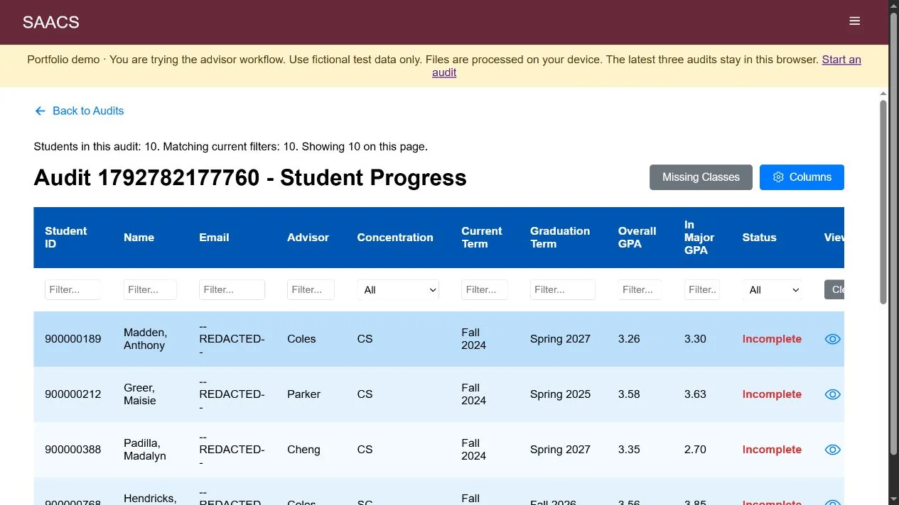

01FULL-STACK / TEAM CAPSTONE
Progress Towards Degree
Making academic advising clearer.
A team-built application that helps academic advisors monitor student degree progress and understand what remains on the path to graduation.
ReactNode.jsJavaScriptKubernetes
1st place · Fall 2025 VTURCS team capstone
Try the live demo
MY CONTRIBUTION
I contributed frontend and backend features and published application updates to the university’s Kubernetes platform.
Engineering details
The problem
Advisors need a practical way to review course histories and degree requirements so they can support student progress toward graduation.
What I worked on
- Developed frontend and backend features through an agile team workflow.
- Published frontend and backend updates by changing container image versions on the university’s Kubernetes platform.
- Earned first place with the project team in the Fall 2025 VTURCS Undergraduate Capstone competition.